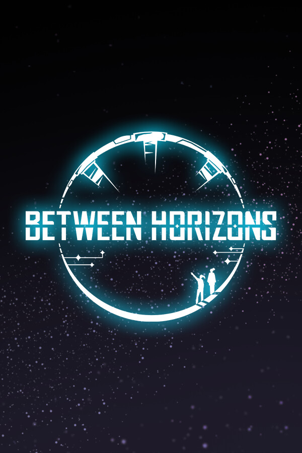

Between Horizons Demo
Between Horizons Demo
Details
|  | |
| Playtime | Not Played |
| Last Activity | Never |
| Added | 2025-03-21 17:36:59 |
| Modified | 2025-03-21 17:37:32 |
| Completion Status | Abandoned |
| Library | Steam |
| Source | Steam |
| Platform | PC (Windows) |
| Release Date | |
| Community Score | |
| Critic Score | |
| User Score | |
| Genre | |
| Developer | |
| Publisher | |
| Feature | |
| Links | |
| Tag | |
Description

About the game
Between Horizons is set aboard the Zephyr, humanity's first generation ship en route to another star. You assume the role of Stella, who was born on the ship 24 years ago and recently inherited her father's post as Chief of Security. Dive into the conspiracy behind the incident that threatens to disrupt the Zephyr's social order and foil its mission.
Between Horizons is a modern 2.5D pixel art adventure that brings a branching narrative into a semi-open world. The team at DigiTales has applied numerous lessons from their first game Lacuna and proven solutions to detective game design problems to maximize player agency in the investigation process – all the while maintaining the tight pacing of a meaningful story that will ask you to reevaluate your moral compass and make increasingly tough decisions as the situation aboard the ship spirals out of control.

Features
- A New Kind of Experience: Between Horizons merges investigative-style gameplay with a branching sci-fi story in an ever-expanding Metroidvania-style environment.
- Solving Cases for Yourself: The flexible evidence system lets players assign clues to cases, confront ship denizens about them, and submit any case with evidence players have connected to it. Everything found on the ship is connected, but figuring out how — that’s the challenge.
- At What Cost?: Underneath the game's exciting and plausible sci-fi plot lies a number of thought-provoking problems inviting players to weigh intergenerational responsibility against personal freedom.
- Getting New Perspective: Timeless pixel art mixed with 3D environments and compelling visual effects come together in Between Horizons, creating a unique, beautiful art style.
- Failure is Very Much an Option: There are no second chances — submitting wrong solutions means the story will go on and players live with the consequences. A new and improved auto-save system will make sure there is no going back, as the story branches and endings are based on player decisions, none of which can be taken back.